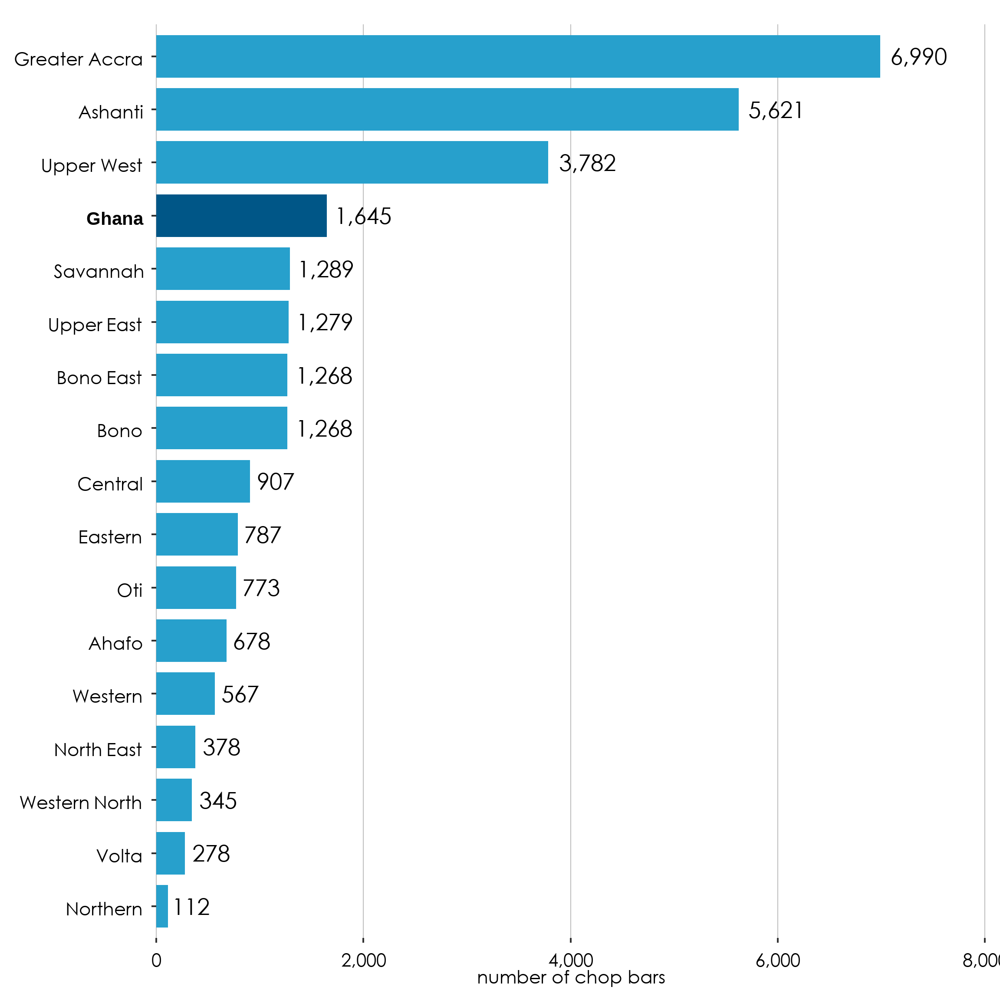

R is an amazing tool for data analysis and visualization. The code on this page shows the a variety of plots using the R ggplot2 package to display statistical outputs. All the data shown on the page is fictitious and only meant for illustrative purposes.
Use of Fonts
Century Gothic Bold, font size 12 should be used for the labels and values on the graph.
General Rules
All axes should be labelled and where possible, the values for data points should be indicated on the graph.
Prevent use of grid lines whenever possible to not clutter plots
Use line breaks in long labels
Be conscious about the way axis are ordered. For example, order regions either from the lowest to the highest value or using the serpentine order.
label axis appropiately
Use of Colours
Please use the following colour schemes for different types of disaggregation.
Sex
Male
Hex: #206095 rgb(32, 96, 149) .
Female
Hex: #F66068 rgb(246, 96,104) .
Locality Type
National
#27A0CC .
Urban
#871A5B .
Rural
#22D0B6 .
Neutral
Neutral is used on general variables. It is advise that the maximum number of variables per plot should not be more than 5.
#002060
#0070C0
#00B0F0
#8EA9DB
#9BC2E6
#FFFFCC
Positive ~ Negative
#6AA84F
#93C47D
#FFFFCC
#F4CCCC
#E06666
Population & Density
#FFFFCC
#C7E9B4
#7FCDBB
#41B6C4
#2C7FB8
Incidence
#FECCCC
#FF9999
#FF6666
#FF3333
#CC0000
#990000
Food / Non-food
Food
#3ECDB9
Non-food
#04BCFC
Using GSS theme
In the future, GSS will release it is own package for data visualizations. For now it suffices to run this code to load the all the R code to set the right defaults (colours, fonts, etc.) to create plots in the GGS theme.
Show the code
# load packageslibrary(ggplot2)library(tidyverse)library(ggtext)library(gghighlight)library(sysfonts)library(showtextdb)library(showtext)library(glue)library(scales)library(kableExtra)library(patchwork)library(forcats)library(tidyverse)library(ggbump)# load the fontfont_add("century gothic bold", "Font/CenturyGothic.ttf")# make sure ggplot recognizes the font # and set the font to high-resshowtext_auto()showtext::showtext_opts(dpi =300)# set default colour for plots with multiple categoriesoptions(ggplot2.discrete.colour =c("#210D69", "#DB2E76", "#586889", "#227C42"))options(ggplot2.discrete.fill =c("#210D69", "#DB2E76", "#586889", "#227C42"))# set default colour for plots with a single categoryupdate_geom_defaults("bar", list(fill ="#27A0CC"))update_geom_defaults("col", list(fill ="#27A0CC"))# update the font to show in geom_text()update_geom_defaults("text", list(family ="century gothic bold", size =4.5 ))# create a GGS theme based on the theme_gray()gssthemes<-function(){theme_gray() %+replace%theme(text=element_text(family="century gothic bold",colour="black",size=10),plot.margin =margin(0.5,0.3, 0.3, 0.3, "cm"),# plot.title =element_textbox_simple(family="century gothic bold", size=16,# lineheight=1,# margin=margin(b=10)),# plot.title.position="plot",plot.caption=element_markdown(hjust=0, color="gray",lineheight=1.5,margin =margin(t=10)),plot.caption.position="plot",axis.title.y=element_text(color="black", angle=90, size =10),axis.title.x=element_text(color="black",size =10),axis.text.x=element_text(color="black", size =10, vjust =0, margin =margin(t =5, r =5, b =0, l =0, unit ="pt")),axis.text.y=element_text(color="black", size =10, hjust =1, margin =margin(t =5, r =5, b =0, l =0, unit ="pt")),legend.text=element_text(color="black", size =10),panel.grid.major.y=element_line(color="gray", size=0.25),panel.grid.major.x=element_blank(),panel.grid.minor=element_blank(),panel.background=element_rect(fill="white", color=NA),plot.background=element_rect(fill="white", color=NA),legend.background=element_rect(fill="white", color=NA),strip.background =element_rect(fill="white", color=NA),strip.text =element_text( size =20, margin =margin(t =5, r =0, b =10, l =0, unit ="pt")) )}# this will make the labels of the bar chart a bit nicer, by ending above the highest data pointnicelimits <-function(x) {range(scales::extended_breaks(only.loose =TRUE)(x))}# Define color palettenational_color <-"#27A0CC"urban_color <-"#871A5B"rural_color <-"#22D0B6"male_color <-"#206095"female_color <-"#F66068"negative_color <-"#cc3333"positive_color <-"#33cccc"neutral_color_scheme <-c("#002060", "#0070C0", "#00B0F0", "#8EA9DB", "#9BC2E6", "#2C7FB8")posneg_color_scheme <-c("#38761D","#6AA84F","#93C47D","#F4CCCC","#E06666","#990000")posneutralneg_color_scheme <-c("#38761D","#6AA84F","#FFFFCC","#E06666","#990000")population_color_scheme <-c("#FFFFCC","#C7E9B4","#7FCDBB","#41B6C4","#2C7FB8")incidence_color_scheme <-c("#FECCCC","#FF9999","#FF6666","#FF3333","#CC0000","#990000")statscolours_color_scheme <-c("#382873", "#0168C8", "#00B050")malefemale_color_scheme <-c("#27A0CC", "#206095", "#F66068")urbanrural_color_scheme <-c("#27A0CC", "#871A5B", "#22D0B6")food_colour<-"#3ECDB9"nonfood_colour<-"#04BCFC"
Bar charts
A bar chart is an effective way to visually represent data that is categorical or discrete in nature for example different regions in Ghana). It is particularly useful when comparing values across different categories or groups. Bar charts are ideal for showing the distribution or frequency of data, as well as identifying trends or patterns over time. They can be used to display numerical data such as quantities, percentages, and proportions. Overall, a bar chart is appropriate when you want to easily compare different categories or groups and understand the relative differences between them.
# Pipe operator to pass data frame to the next linen_chopbars_df %>%# Create a ggplot object and set the aesthetic mappingsggplot(mapping =aes(x = region, y = number_of_chop_bars)) +# Add a column chart with bars of equal widthgeom_col(width =0.8) +# Apply a custom theme to the plotgssthemes() +# The expand argument controls whether the range of the y-axis is expanded to include a small margin around the data. The limits argument sets the upper and lower limits of the y-axis to nicelimits, which is a function that makes sure the limits are always above the largest data point. he breaks argument sets the tick marks on the y-axis to use extended_breaks from the scales package, which generates a sequence of evenly spaced values with loose spacing.scale_y_continuous( expand =c( 0, 1 ),limits = nicelimits,labels = scales::comma,breaks = scales::extended_breaks(only.loose =TRUE)) +# Set the scale for the x-axis with tick labels rotated by 90 degreesscale_x_discrete(guide =guide_axis(angle =90)) +# Add axis labels to the plotlabs(x =NULL,y ="number of chop bars")+# Set the coordinate system for the plot, allowing data points to be partially displayed outside of the plot area.coord_cartesian(clip ="off")
One Color (Rotated) with labels
This example introduces coord_flip() instead of coord_cartesian() and bring back some theme elements to draw vertical instead of horizontal grid lines.
Show the code
# Pipe operator to pass data frame to the next linen_chopbars_df %>%# Create a ggplot object and set the aesthetic mappingsggplot(mapping =aes(x = region, y = number_of_chop_bars)) +# Add a column chart with bars of equal widthgeom_col(width =0.8) +# add text to the end of the plotgeom_text(mapping =aes(label = number_of_chop_bars), hjust =-0.2) +# Apply a custom theme to the plotgssthemes() +# The expand argument controls whether the range of the y-axis is expanded to include a small margin around the data. # The limits argument sets the upper and lower limits of the y-axis to nicelimits, which is a function that makes sure # the limits are always above the largest data point. he breaks argument sets the tick marks on the y-axis to use# extended_breaks from the scales package, which generates a sequence of evenly spaced values with loose spacing.scale_y_continuous( expand =c( 0, 1 ),limits = nicelimits,labels = scales::comma,breaks = scales::extended_breaks(only.loose =TRUE)) +# Add axis labels to the plotlabs(x =NULL,y ="number of chop bars")+# Set the coordinate system for the plot, allowing data points to be partially displayed outside of the plot area.coord_flip(clip ="off") +# change the theme a bit so that 1) the axis lines are vertical and 2) the labels are right alligendtheme(panel.grid.major.x=element_line(color ="gray", size=0.25),panel.grid.major.y=element_blank(),axis.text.x =element_text(vjust =0.5))
One Color (Rotated) with labels and ordered
You can use the reorder() function to order the axis labels.
Show the code
# Pipe operator to pass data frame to the next linen_chopbars_df %>%# Create a ggplot object and set the aesthetic mappings# use the reorder function to reorder the the barsggplot(mapping =aes(x =reorder(region,number_of_chop_bars), y = number_of_chop_bars)) +# Add a column chart with bars of equal widthgeom_col(width =0.8) +# add text to the end of the plot, and comma at all thousandsgeom_text(mapping =aes(label = scales::comma(number_of_chop_bars)), hjust =-0.2,) +# Apply a custom theme to the plotgssthemes() +# The expand argument controls whether the range of the y-axis is expanded to include a small margin around the data. # The limits argument sets the upper and lower limits of the y-axis to nicelimits, which is a function that makes sure # the limits are always above the largest data point. he breaks argument sets the tick marks on the y-axis to use# extended_breaks from the scales package, which generates a sequence of evenly spaced values with loose spacing.scale_y_continuous( expand =c( 0, 1 ),limits = nicelimits,labels = scales::comma,breaks = scales::extended_breaks(only.loose =TRUE)) +# Add axis labels to the plotlabs(x =NULL,y ="number of chop bars")+# Set the coordinate system for the plot, allowing data points to be partially displayed outside of the plot area.coord_flip(clip ="off") +# change the theme a bit so that 1) the axis lines are vertical and 2) the labels are right alligendtheme(panel.grid.major.x=element_line(color ="gray", size=0.25),panel.grid.major.y=element_blank(),axis.text.x =element_text(vjust =0.5))
Show different categories using color palettes (stacked)
If you want to show different categories, you can use the fill = categorical variable argument inside the aesthetics mapping. To do this, the data needs to be in a long format
Show different categories using color palettes (dodged)
Instead of having the categories stacked, you can put them next to each other (stacked)
Show the code
n_chopbars_df_longformat %>%ggplot(mapping =aes(x =reorder(region,number_of_chop_bars), fill = locality , y = number_of_chop_bars)) +geom_col(width =0.8, position ="dodge") +geom_text(mapping =aes(label = scales::comma(number_of_chop_bars)), hjust =-0.2, position =position_dodge(width =0.8)) +gssthemes() +scale_y_continuous( expand =c( 0, 0 ),limits = nicelimits,labels = scales::comma,breaks = scales::extended_breaks(only.loose =TRUE)) +labs(x =NULL,y ="number of chop bars")+coord_flip(clip ="off") +scale_fill_manual(values =c(urban = urban_color,rural = rural_color))+theme(panel.grid.major.x=element_line(color ="gray", size=0.25),panel.grid.major.y=element_blank(),axis.text.x =element_text(vjust =0.5))
Bar chart with highlighted category
Sometimes you might want to highlight a single category in a bar chart (for example the National/Ghana average). To highlight also the axis label you need to use the showtext package. It is recommended to put highlight is a similar hue than the other colours. This can be done, using the muted() function from the scales package
Show the code
# this code add the Ghana averagen_chopbars_df_with_national <- n_chopbars_df %>%add_row( region_number =0,region ="Ghana",number_of_chop_bars =mean(n_chopbars_df$number_of_chop_bars),urban =mean(n_chopbars_df$urban ),rural=mean(n_chopbars_df$rural) )
Show the code
highlight =function(x, pat, color="black", family="") {ifelse(grepl(pat, x), glue("<b style='font-family:{family}; color:{color}'>{x}</b>"), x)}# Pipe operator to pass data frame to the next linen_chopbars_df_with_national %>%mutate(highlight = region =="Ghana") %>%# Create a ggplot object and set the aesthetic mappings# use the reorder function to reorder the the barsggplot(mapping =aes(x =reorder(region,number_of_chop_bars), y = number_of_chop_bars,fill = highlight)) +geom_col(width =0.8) +geom_text(mapping =aes(label = scales::comma(number_of_chop_bars)), hjust =-0.2) +gssthemes() +scale_y_continuous( expand =c( 0, 0 ),limits = nicelimits,labels = scales::comma,breaks = scales::extended_breaks(only.loose =TRUE)) +scale_x_discrete(labels=function(x) highlight(x, "Ghana", "black")) +scale_fill_manual(values =c(`FALSE`= national_color, `TRUE`= scales::muted(national_color)),guide ="none") +labs(x =NULL,y ="number of chop bars" )+coord_flip(clip ="off") +theme(panel.grid.major.x =element_line(color ="gray", size=0.25),panel.grid.major.y =element_blank(),axis.text.x =element_text(vjust =0.5),axis.text.y =element_markdown()) # to make this work you need to make the y axis a markdown format

Bar chart with long labels
To allow for sufficient plotting space, it is a good idea to add line break to long value labels on the axes. You can use the str_wrap() function to add line breaks
example data (long labels)
Show the code
n_chopbars_df_long_labels <-tribble(~question, ~count, "number of households eating at chopbars every day", 678,"number of male headed households eating at chopbars once a week", 1267,"number of female headed households eating at chop bars once a week", 1876)n_chopbars_df_long_labels %>%kable() %>%kable_styling()
question
count
number of households eating at chopbars every day
678
number of male headed households eating at chopbars once a week
1267
number of female headed households eating at chop bars once a week
A diverging bar chart is a type of data visualization that displays values of a quantitative variable across two or more categories, where the bars are centered on a common baseline or a central axis. This type of chart is particularly useful for comparing differences in values that can have both positive and negative magnitudes, or when illustrating a relationship between two opposing factors or sentiments.
In a diverging bar chart, the bars extend in opposite directions from the central axis, creating a symmetrical pattern. This layout makes it easy to see the differences between categories and to identify patterns and trends within the data.
When choosing a diverging bar chart, make sure it is appropriate for your dataset and the type of information you want to convey. It is important to note that diverging bar charts may not be suitable for all types of data, especially if the differences between categories are not symmetrical or if the data has no clear central point. In such cases, other visualization methods, like standard bar charts or line charts, might be more suitable.
sentiment_chop_bars %>%pivot_longer(-location, names_to ="sentiment") %>%mutate(percent = value /100) %>%# make sure the sentiment labels are factors so that they can be ordered correctlymutate(sentiment =factor( sentiment,levels =c("very positive","positive","neutral","negative","very negative" ) )) %>%ggplot(aes(x = location, y = percent, fill = sentiment)) +geom_col(width =0.8, position ="stack") +gssthemes() +scale_y_continuous(labels = scales::percent,expand =c(0, 0)) +labs(x =NULL,y ="percentage",fill ="opinion on chop bars") +coord_flip(clip ="off") +scale_fill_manual(values = posneutralneg_color_scheme) +theme(panel.grid.major.x =element_line(color ="gray", size =0.25),panel.grid.major.y =element_blank(),legend.position ="top" ) +guides(fill =guide_legend(nrow =2,byrow =TRUE,title.position ="top" ))
multiple plots next to each other using facet_wrap()
Rs faceting system is a powerful way to make small multiples.
Show the code
n_chopbars_df_longformat %>%ggplot(mapping =aes(x =reorder(region,number_of_chop_bars), fill = locality , y = number_of_chop_bars)) +geom_col(width =0.8, position ="dodge") +geom_text(mapping =aes(label = scales::comma(number_of_chop_bars)), hjust =-0.2, position =position_dodge(width =0.8)) +gssthemes() +scale_y_continuous( expand =c(0,NA),limits =c(0, 7000),labels = scales::comma,breaks = scales::extended_breaks(only.loose =TRUE)) +labs(x =NULL,y ="number of chop bars")+coord_flip(clip ="off") +scale_fill_manual(values =c(urban = urban_color,rural = rural_color))+theme(panel.grid.major.x=element_line(color ="gray", size=0.25),panel.grid.major.y=element_blank(),legend.position ="none") +# use the facet_wrap function to make small multiplesfacet_wrap(~locality)
multiple plots next to each other with separate bar legends
Sometimes using facet_wrap is not sufficient, especially if you want to add different legends to sub-plots, but still want to align different axis of plots into a single plots. To do this you can create 3 seperate plots and merge them using the patchwork package
n_chopbars_df_region_quarters_longformat <- n_chopbars_df_region_quarters %>%pivot_longer(-c(region_number, region, quarter),names_to ="locality",values_to ="number_of_chop_bars" )p_national <- n_chopbars_df_region_quarters_longformat %>%filter(locality =="national") %>%ggplot(mapping =aes(x =reorder(region,desc(region_number)),y = number_of_chop_bars)) +geom_col(width =0.8,aes( alpha =reorder(quarter, desc(quarter))),position =position_dodge(width =0.8),fill = national_color)+geom_text(mapping =aes(label = scales::comma(number_of_chop_bars),group =reorder(quarter, desc(quarter))),hjust =-0.2,position =position_dodge(width =0.8) ) +gssthemes() +scale_y_continuous( limits =c(0, 10000),labels = scales::comma) +scale_alpha_manual(values =seq(from =0.5,to =1,length.out =2 ),guide =guide_legend(reverse =TRUE))+labs(x =NULL,alpha =NULL,y ="number of chop bars",title ="National")+coord_flip(clip ="off") +theme(panel.grid.major.x =element_line(color ="gray", size=0.25),panel.grid.major.y =element_blank(),legend.position ="top",axis.text.x =element_text(vjust =0.5),plot.title=element_text(hjust=0.5),plot.subtitle=element_text(hjust=0.5))p_urban <- n_chopbars_df_region_quarters_longformat %>%filter(locality =="urban") %>%ggplot(mapping =aes(x =reorder(region,desc(region_number)),y = number_of_chop_bars,group =reorder(quarter, desc(quarter)))) +geom_col(width =0.8,aes( alpha =reorder(quarter, desc(quarter))),position ="dodge",fill = urban_color) +geom_text(mapping =aes(label = scales::comma(number_of_chop_bars)), hjust =-0.2, position =position_dodge(width =0.8)) +gssthemes() +scale_y_continuous( limits =c(0, 10000),labels = scales::comma) +scale_alpha_manual(values =seq(from =0.5,to =1,length.out =2 ),guide =guide_legend(reverse =TRUE))+labs(x =NULL,alpha =NULL,y ="number of chop bars",title ="Urban")+coord_flip(clip ="off") +# move the title text and subtitle text to the middletheme(plot.title=element_text(hjust=0.5),plot.subtitle=element_text(hjust=0.5),panel.grid.major.x =element_line(color ="gray", size=0.25),panel.grid.major.y =element_blank(),axis.ticks.y=element_blank(), legend.position ="top",axis.text.y =element_blank())p_rural <- n_chopbars_df_region_quarters_longformat %>%filter(locality =="rural") %>%ggplot(mapping =aes(x =reorder(region,desc(region_number)),y = number_of_chop_bars,group =reorder(quarter, desc(quarter)))) +geom_col(width =0.8,aes( alpha =reorder(quarter, desc(quarter))),position ="dodge",fill = rural_color) +geom_text(mapping =aes(label = scales::comma(number_of_chop_bars)), hjust =-0.2, position =position_dodge(width =0.8)) +gssthemes() +scale_y_continuous( limits =c(0, 10000),labels = scales::comma) +scale_alpha_manual(values =seq(from =0.5,to =1,length.out =2 ),guide =guide_legend(reverse =TRUE))+labs(x =NULL,alpha =NULL,y ="number of chop bars",title ="Rural")+coord_flip(clip ="off") +# move the title text and subtitle text to the middletheme(plot.title=element_text(hjust=0.5),plot.subtitle=element_text(hjust=0.5),panel.grid.major.x =element_line(color ="gray", size=0.25),panel.grid.major.y =element_blank(),axis.ticks.y=element_blank(), legend.position ="top",axis.text.y =element_blank())p_national + p_urban + p_rural
bar chart with a singe category hightlighted on top
with a bit of effor, a variable can also be shown on its own. In this case you can use facet_grid()
Show the code
n_chopbars_df_with_national %>%mutate(highlight = region =="Ghana") %>%# Create a ggplot object and set the aesthetic mappings# use the reorder function to reorder the the barsggplot(mapping =aes(x =reorder(region,number_of_chop_bars), y = number_of_chop_bars,fill = highlight)) +geom_col(width =0.8) +geom_text(mapping =aes(label = scales::comma(number_of_chop_bars)), hjust =-0.2) +gssthemes() +scale_y_continuous( expand =c( 0, 0 ),limits = nicelimits,labels = scales::comma,breaks = scales::extended_breaks(only.loose =TRUE)) +scale_x_discrete(labels=function(x) highlight(x, "Ghana", "black")) +scale_fill_manual(values =c(`FALSE`= national_color, `TRUE`= scales::muted(national_color)),guide ="none") +labs(x =NULL,y ="number of chop bars" )+coord_flip(clip ="off") +theme(panel.grid.major.x =element_line(color ="gray", size=0.25),panel.grid.major.y =element_blank(),axis.text.x =element_text(vjust =0.5),strip.text =element_blank(),axis.text.y =element_markdown()) +facet_grid(fct_rev(as.factor(highlight))~.,scales ="free",space ="free_y")# to make this work you need to make the y axis a markdown format
Population pyramid
An illustration of the age and gender distribution of a population is called a population pyramid. It is widely used to illustrate both the current trend in population growth and a populations makeup. In most cases, the chart is divided into two equal parts, one for males and the other for women. The age groups are frequently displayed along a vertical axis, with the youngest age group at the bottom and the oldest at the top.
A lollipop chart is used visually represent time series data where magnitude of occurrence is to be communicated. It shows the relationship between a numeric and a categorical variable, as well as identifying trends or patterns over time. They can be used to display numerical data such as quantities and magnitude.
# Create the data framearea_df <-data.frame(year =c(2010, 2011, 2012, 2013, 2014, 2015),rural_growth =c(2.1, 2.5, 2.8, 3.2, 3.5, 3.9),urban_growth =c(2.8, 3.1, 3.4, 3.7, 4.0, 4.3))# Create the plotggplot(area_df, aes(x = year, y = urban_growth)) +geom_line(color = urban_color, size=2) +geom_ribbon(aes(ymin = rural_growth, ymax = urban_growth), alpha =0.2, fill = national_color) +geom_line(aes(y = rural_growth), color = rural_color , size=2) +labs(title ="Rural and Urban Growth", x ="Year", y ="Growth (%)") +gssthemes()
Line chart
Line chart with multiple lines
Smoothed line chart
Line chart with multiple lines with a few highlighted lines
Line chart with multiple lines with labels at the end of the line
Step line chart (geom_step)
Pie chart
A pie chart is a circular statistical picture that divides into slices to represent numerical quantities. Each pie slice symbolizes a certain category, and the size of each slice is inversely proportionate to the amount it represents. Pie charts are used to show how several categories are spread within a whole.
Pie charts are the most effective for comparing parts of an entire. They do not show changes over time or relationships between variables. When there are many categories or not many differences between the groupings, pie charts might be difficult to read and comprehend.
Show the code
# Sample datadf <-data.frame(country =c("US", "UK", "Australia", "Germany", "France"),value =c(10, 12, 4, 16, 8))# Pie chartggplot(df) +geom_col(aes(x ="", y = value, fill = country)) +coord_polar(theta ="y")+gssthemes()
Donut chart
A donut chart is a type of chart that is similar to a pie chart, but with a hole in the center. Like a pie chart, a donut chart displays the relative proportions of different categories within a whole. Each slice of the donut represents a category and the size of the slice is proportional to the quantity it represents.
Donut charts are used in similar situations as pie charts, to show the relative proportions of different categories within a whole. They can be useful when you want to compare parts of a whole or when you want to display multiple pie charts with the same scale in a small space. The hole in the center of the donut chart can also be used to display additional information or to label the chart. The hole in the center of the donut chart can also be used to display additional information or to label the chart.
A waffle chart, also known as a square pie chart or a mosaic plot, is a type of chart that displays parts of a whole for categorical quantities. It is similar to a pie chart but uses squares instead of wedges to represent the proportions. Each square in the chart represents a fixed quantity and the total number of squares represents the total quantity.
Waffle charts are used in similar situations as pie charts, to show the relative proportions of different categories within a whole. They can be useful when you want to compare parts of a whole or when you want to display multiple pie charts with the same scale in a small space. Waffle charts can also be easier to read and interpret than pie charts when there are many categories or if the differences between the categories are small.
also known as connected dot plot, it shows the changes in a variable between two different conditions or points in time. It is frequently employed to contrast two connected variables across various categories. Each dot on the graph, which is made up of two dots connected by a line or bar, reflects the value of one of the variables for a certain category.
Dumbbell charts are helpful for comparing the range of a variable across various groups or for displaying change over time for multiple groups.
Show the code
# Sample datadf <-data.frame(company = LETTERS[1:10],customers =sample(50:150, 10),potential_customers =sample(150:500, 10))# Dumbbell chartggplot(df) +geom_segment(aes(x = customers, xend = potential_customers, y = company, yend = company), color ="gray") +geom_point(aes(x = customers, y = company), size =3, color ="#3ECDB9") +geom_point(aes(x = potential_customers, y = company), size =3, color ="#04BCFC")+gssthemes()
Scatterplot
A scatter plot is a type of chart that displays the relationship between two numerical variables. Each data point is represented as a dot on the chart, with the position of the dot determined by the values of the two variables. Scatter plots are used to visually explore and analyze the relationship between two variables.
Scatter plots are useful for identifying trends, patterns, and correlations in the data. They can also be used to detect outliers or to assess the strength and direction of the relationship between the two variables. Scatter plots are commonly used in many fields, including finance, economics, social sciences, and engineering.
A bump chart is a type of chart that is used to visualize changes in rank over time. It is similar to a line chart, but instead of plotting a measure on the y-axis, it shows the rank of the values. When a line crosses another line, it indicates a change in rank.
Bump charts are useful for comparing the position, performance, or rankings of multiple observations over time. They can be used to explore changes in rank for different categories or to draw attention to changes in rankings rather than the actual values themselves. Bump charts are commonly used in many fields, including finance, economics, sports, and social sciences.
---title: "R visualization"format: html: fig-width: 8 fig-height: 6 fig.retina: 3 message: false warning: false echo: true code-fold: true code-summary: "Show the code" code-tools: true---<linkrel="stylesheet"href="//fonts.googleapis.com/css?family=Lato"/>```{r setup}#| context: setup#| include: falselibrary(knitr)library(datasets)library(tidyverse)library(ggplot2)library(glue)opts_chunk$set(fig.path ="graphics-guide/www/images/")# opts_chunk$set(echo = TRUE)# opts_chunk$set(warning = FALSE)# opts_chunk$set(message = FALSE)# opts_chunk$set(fig.width = 7.5)# opts_chunk$set(fig.height = 5)opts_chunk$set(fig.retina =3)options(scipen =999)bs_style <-c("striped", "hover", "condensed", "responsive")options(kable_styling_bootstrap_options = bs_style)```R is an amazing tool for data analysis and visualization. The code on this page shows the a variety of plots using the R `ggplot2` package to display statistical outputs. All the data shown on the page is fictitious and only meant for illustrative purposes.## Use of Fonts - Century Gothic Bold, font size 12 should be used for the labels and values on the graph. ## General Rules- All axes should be labelled and where possible, the values for data points should be indicated on the graph.- Prevent use of grid lines whenever possible to not clutter plots- Use line breaks in long labels- Be conscious about the way axis are ordered. For example, order regions either from the lowest to the highest value or using the serpentine order.- label axis appropiately## Use of ColoursPlease use the following colour schemes for different types of disaggregation.#### Sex```{=html}<div class="multi-group-container"> <div class="color two"> <p style="text-align:center">Male</p> <div class="swatch groupcolor male dark"> <div class="color-code"><br><br>Hex: #206095 <br>rgb(32, 96, 149)<br>.</div> </div> <svg width="30" height="30" class="print-swatch"><rect width="30" height="30" fill="#1696d2"></rect></svg></div> <div class="color two"> <p style="text-align: center">Female</p> <div class="swatch groupcolor female dark"> <div class="color-code"><br><br>Hex: #F66068 <br>rgb(246, 96,104)<br>.</div> </div> <svg width="30" height="30" class="print-swatch"><rect width="30" height="30" fill="#000000"></rect></svg></div> </div> <br> <br>```#### Locality Type```{=html}<div class="multi-group-container"> <div class="color three"> <p style="text-align: center">National</p> <div class="swatch groupcolor national dark"> <div class="color-code"><br><br>#27A0CC <br>.</div> </div> <svg width="30" height="30" class="print-swatch"><rect width="30" height="30" fill="#1696d2"></rect></svg></div> <div class="color three"> <p style="text-align: center">Urban</p> <div class="swatch groupcolor urban dark"> <div class="color-code"><br><br>#871A5B <br>.</div> </div> <svg width="30" height="30" class="print-swatch"><rect width="30" height="30" fill="#000000"></rect></svg></div> <div class="color three"> <p style="text-align: center">Rural</p> <div class="swatch groupcolor rural"> <div class="color-code"><br><br>#22D0B6 <br>.</div> </div> <svg width="30" height="30" class="print-swatch"><rect width="30" height="30" fill="#000000"></rect></svg></div> </div> <br> <br>```<br>#### NeutralNeutral is used on general variables. It is advise that the maximum number of variables per plot should not be more than 5.```{=html}<div class="multi-group-container"> <div class="colour six"> <div class="swatch groupcolor Neutral1 dark"> <div class="color-code"><br>#002060</div> </div> <svg width="30" height="30" class="print-swatch"><rect width="30" height="30" fill="#1696d2"></rect></svg></div> <div class="colour six"> <div class="swatch groupcolor Neutral2 dark"> <div class="color-code"><br>#0070C0</div> </div> <svg width="30" height="30" class="print-swatch"><rect width="30" height="30" fill="#d2d2d2"></rect></svg></div> <div class="colour six"> <div class="swatch groupcolor Neutral3 dark"> <div class="color-code"><br>#00B0F0</div> </div> <svg width="30" height="30" class="print-swatch"><rect width="30" height="30" fill="#000000"></rect></svg></div> <div class="colour six"> <div class="swatch groupcolor Neutral4"> <div class="color-code"><br>#8EA9DB</div> </div> <svg width="30" height="30" class="print-swatch"><rect width="30" height="30" fill="#fdbf11"></rect></svg></div> <div class="colour six"> <div class="swatch groupcolor Neutral5"> <div class="color-code"><br>#9BC2E6</div> </div> <svg width="30" height="30" class="print-swatch"><rect width="30" height="30" fill="#ec008b"></rect></svg></div> <div class="colour six"> <div class="swatch groupcolor Neutral6"> <div class="color-code"><br>#FFFFCC</div> </div> <svg width="30" height="30" class="print-swatch"><rect width="30" height="30" fill="#55b748"></rect></svg></div> </div> <br> <br>```<br>#### Positive \~ Negative```{=html}<div class="multi-group-container"> <div class="colour five"> <div class="swatch groupcolor Positive1"> <div class="color-code"><br>#6AA84F</div> </div> <svg width="30" height="30" class="print-swatch"><rect width="30" height="30" fill="#1696d2"></rect></svg></div> <div class="colour five"> <div class="swatch groupcolor Positive2"> <div class="color-code"><br>#93C47D</div> </div> <svg width="30" height="30" class="print-swatch"><rect width="30" height="30" fill="#d2d2d2"></rect></svg></div> <div class="colour five"> <div class="swatch groupcolor Neutral"> <div class="color-code"><br>#FFFFCC</div> </div> <svg width="30" height="30" class="print-swatch"><rect width="30" height="30" fill="#000000"></rect></svg></div> <div class="colour five"> <div class="swatch groupcolor Negative2"> <div class="color-code"><br>#F4CCCC</div> </div> <svg width="30" height="30" class="print-swatch"><rect width="30" height="30" fill="#fdbf11"></rect></svg></div> <div class="colour six"> <div class="swatch groupcolor Negative1"> <div class="color-code"><br>#E06666</div> </div> <svg width="30" height="30" class="print-swatch"><rect width="30" height="30" fill="#ec008b"></rect></svg></div> </div> <br> <br>```<br>#### Population & Density```{=html}<div class="multi-group-container"> <div class="colour five"> <div class="swatch groupcolor pop1"> <div class="color-code"><br>#FFFFCC</div> </div> <svg width="30" height="30" class="print-swatch"><rect width="30" height="30" fill="#d2d2d2"></rect></svg></div> <div class="colour five"> <div class="swatch groupcolor pop2"> <div class="color-code"><br>#C7E9B4</div> </div> <svg width="30" height="30" class="print-swatch"><rect width="30" height="30" fill="#000000"></rect></svg></div> <div class="colour five"> <div class="swatch groupcolor pop3"> <div class="color-code"><br>#7FCDBB</div> </div> <svg width="30" height="30" class="print-swatch"><rect width="30" height="30" fill="#fdbf11"></rect></svg></div> <div class="colour five"> <div class="swatch groupcolor pop4 dark"> <div class="color-code"><br>#41B6C4</div> </div> <svg width="30" height="30" class="print-swatch"><rect width="30" height="30" fill="#ec008b"></rect></svg></div> <div class="colour five"> <div class="swatch groupcolor pop5 dark"> <div class="color-code"><br>#2C7FB8</div> </div> <svg width="30" height="30" class="print-swatch"><rect width="30" height="30" fill="#55b748"></rect></svg></div> </div> <br> <br>```<br>#### Incidence```{=html}<div class="multi-group-container"> <div class="colour six"> <div class="swatch groupcolor inci1"> <div class="color-code"><br>#FECCCC</div> </div> <svg width="30" height="30" class="print-swatch"><rect width="30" height="30" fill="#d2d2d2"></rect></svg></div> <div class="colour six"> <div class="swatch groupcolor inci2"> <div class="color-code"><br>#FF9999</div> </div> <svg width="30" height="30" class="print-swatch"><rect width="30" height="30" fill="#000000"></rect></svg></div> <div class="colour six"> <div class="swatch groupcolor inci3 dark"> <div class="color-code"><br>#FF6666</div> </div> <svg width="30" height="30" class="print-swatch"><rect width="30" height="30" fill="#fdbf11"></rect></svg></div> <div class="colour six"> <div class="swatch groupcolor inci4 dark"> <div class="color-code"><br>#FF3333</div> </div> <svg width="30" height="30" class="print-swatch"><rect width="30" height="30" fill="#ec008b"></rect></svg></div> <div class="colour six"> <div class="swatch groupcolor inci5 dark"> <div class="color-code"><br>#CC0000</div> </div> <svg width="30" height="30" class="print-swatch"><rect width="30" height="30" fill="#55b748"></rect></svg></div> <div class="colour six"> <div class="swatch groupcolor inci6 dark"> <div class="color-code"><br>#990000</div> </div> <svg width="30" height="30" class="print-swatch"><rect width="30" height="30" fill="#55b748"></rect></svg></div> </div> <br> <br>```<br>#### Food / Non-food```{=html}<div class="multi-group-container"> <div class="color two"> <p style="text-align:center">Food</p> <div class="swatch groupcolor food"> <div class="color-code"><br>#3ECDB9 <br></div> </div> <svg width="30" height="30" class="print-swatch"><rect width="30" height="30" fill="#1696d2"></rect></svg></div> <div class="color two"> <p style="text-align: center">Non-food</p> <div class="swatch groupcolor nonfood"> <div class="color-code"><br>#04BCFC<br></div> </div> <svg width="30" height="30" class="print-swatch"><rect width="30" height="30" fill="#000000"></rect></svg></div> </div> <br> <br>```<br># Using GSS themeIn the future, GSS will release it is own package for data visualizations. For now it suffices to run this code to load the all the R code to set the right defaults (colours, fonts, etc.) to create plots in the GGS theme.```{r}# load packageslibrary(ggplot2)library(tidyverse)library(ggtext)library(gghighlight)library(sysfonts)library(showtextdb)library(showtext)library(glue)library(scales)library(kableExtra)library(patchwork)library(forcats)library(tidyverse)library(ggbump)# load the fontfont_add("century gothic bold", "Font/CenturyGothic.ttf")# make sure ggplot recognizes the font # and set the font to high-resshowtext_auto()showtext::showtext_opts(dpi =300)# set default colour for plots with multiple categoriesoptions(ggplot2.discrete.colour =c("#210D69", "#DB2E76", "#586889", "#227C42"))options(ggplot2.discrete.fill =c("#210D69", "#DB2E76", "#586889", "#227C42"))# set default colour for plots with a single categoryupdate_geom_defaults("bar", list(fill ="#27A0CC"))update_geom_defaults("col", list(fill ="#27A0CC"))# update the font to show in geom_text()update_geom_defaults("text", list(family ="century gothic bold", size =4.5 ))# create a GGS theme based on the theme_gray()gssthemes<-function(){theme_gray() %+replace%theme(text=element_text(family="century gothic bold",colour="black",size=10),plot.margin =margin(0.5,0.3, 0.3, 0.3, "cm"),# plot.title =element_textbox_simple(family="century gothic bold", size=16,# lineheight=1,# margin=margin(b=10)),# plot.title.position="plot",plot.caption=element_markdown(hjust=0, color="gray",lineheight=1.5,margin =margin(t=10)),plot.caption.position="plot",axis.title.y=element_text(color="black", angle=90, size =10),axis.title.x=element_text(color="black",size =10),axis.text.x=element_text(color="black", size =10, vjust =0, margin =margin(t =5, r =5, b =0, l =0, unit ="pt")),axis.text.y=element_text(color="black", size =10, hjust =1, margin =margin(t =5, r =5, b =0, l =0, unit ="pt")),legend.text=element_text(color="black", size =10),panel.grid.major.y=element_line(color="gray", size=0.25),panel.grid.major.x=element_blank(),panel.grid.minor=element_blank(),panel.background=element_rect(fill="white", color=NA),plot.background=element_rect(fill="white", color=NA),legend.background=element_rect(fill="white", color=NA),strip.background =element_rect(fill="white", color=NA),strip.text =element_text( size =20, margin =margin(t =5, r =0, b =10, l =0, unit ="pt")) )}# this will make the labels of the bar chart a bit nicer, by ending above the highest data pointnicelimits <-function(x) {range(scales::extended_breaks(only.loose =TRUE)(x))}# Define color palettenational_color <-"#27A0CC"urban_color <-"#871A5B"rural_color <-"#22D0B6"male_color <-"#206095"female_color <-"#F66068"negative_color <-"#cc3333"positive_color <-"#33cccc"neutral_color_scheme <-c("#002060", "#0070C0", "#00B0F0", "#8EA9DB", "#9BC2E6", "#2C7FB8")posneg_color_scheme <-c("#38761D","#6AA84F","#93C47D","#F4CCCC","#E06666","#990000")posneutralneg_color_scheme <-c("#38761D","#6AA84F","#FFFFCC","#E06666","#990000")population_color_scheme <-c("#FFFFCC","#C7E9B4","#7FCDBB","#41B6C4","#2C7FB8")incidence_color_scheme <-c("#FECCCC","#FF9999","#FF6666","#FF3333","#CC0000","#990000")statscolours_color_scheme <-c("#382873", "#0168C8", "#00B050")malefemale_color_scheme <-c("#27A0CC", "#206095", "#F66068")urbanrural_color_scheme <-c("#27A0CC", "#871A5B", "#22D0B6")food_colour<-"#3ECDB9"nonfood_colour<-"#04BCFC"```## Bar chartsA bar chart is an effective way to visually represent data that is categorical or discrete in nature for example different regions in Ghana). It is particularly useful when comparing values across different categories or groups. Bar charts are ideal for showing the distribution or frequency of data, as well as identifying trends or patterns over time. They can be used to display numerical data such as quantities, percentages, and proportions. Overall, a bar chart is appropriate when you want to easily compare different categories or groups and understand the relative differences between them.### example data```{r}n_chopbars_df <-tribble(~region_number, ~region, ~number_of_chop_bars, ~urban, ~rural,1,"Western", 567, 300, 267,2, "Central", 907, 600, 307,3, "Greater Accra", 6990, 4792, 2198, 4, "Volta", 278, 78, 200, 5, "Eastern", 787, 287, 500,6, "Ashanti",5621, 621, 5000,7, "Western North", 345, 145, 200,8, "Ahafo", 678, 339, 339,9, "Bono",1268, 600, 668, 10,"Bono East", 1268,1048, 220,11,"Oti",773, 500, 273, 12,"Northern", 112, 12, 100,13,"Savannah", 1289,503, 786, 14,"North East",378, 142, 236,15,"Upper East",1279,326, 953, 16, "Upper West", 3782, 3456, 326) n_chopbars_df %>%kable() %>%kable_styling() %>%scroll_box(height ="400px")```### One Color```{r barplot-normal}# Pipe operator to pass data frame to the next linen_chopbars_df %>%# Create a ggplot object and set the aesthetic mappingsggplot(mapping =aes(x = region, y = number_of_chop_bars)) +# Add a column chart with bars of equal widthgeom_col(width =0.8) +# Apply a custom theme to the plotgssthemes() +# The expand argument controls whether the range of the y-axis is expanded to include a small margin around the data. The limits argument sets the upper and lower limits of the y-axis to nicelimits, which is a function that makes sure the limits are always above the largest data point. he breaks argument sets the tick marks on the y-axis to use extended_breaks from the scales package, which generates a sequence of evenly spaced values with loose spacing.scale_y_continuous( expand =c( 0, 1 ),limits = nicelimits,labels = scales::comma,breaks = scales::extended_breaks(only.loose =TRUE)) +# Set the scale for the x-axis with tick labels rotated by 90 degreesscale_x_discrete(guide =guide_axis(angle =90)) +# Add axis labels to the plotlabs(x =NULL,y ="number of chop bars")+# Set the coordinate system for the plot, allowing data points to be partially displayed outside of the plot area.coord_cartesian(clip ="off")```### One Color (Rotated) with labels This example introduces `coord_flip()` instead of `coord_cartesian()` and bring back some theme elements to draw vertical instead of horizontal grid lines. ```{r}# Pipe operator to pass data frame to the next linen_chopbars_df %>%# Create a ggplot object and set the aesthetic mappingsggplot(mapping =aes(x = region, y = number_of_chop_bars)) +# Add a column chart with bars of equal widthgeom_col(width =0.8) +# add text to the end of the plotgeom_text(mapping =aes(label = number_of_chop_bars), hjust =-0.2) +# Apply a custom theme to the plotgssthemes() +# The expand argument controls whether the range of the y-axis is expanded to include a small margin around the data. # The limits argument sets the upper and lower limits of the y-axis to nicelimits, which is a function that makes sure # the limits are always above the largest data point. he breaks argument sets the tick marks on the y-axis to use# extended_breaks from the scales package, which generates a sequence of evenly spaced values with loose spacing.scale_y_continuous( expand =c( 0, 1 ),limits = nicelimits,labels = scales::comma,breaks = scales::extended_breaks(only.loose =TRUE)) +# Add axis labels to the plotlabs(x =NULL,y ="number of chop bars")+# Set the coordinate system for the plot, allowing data points to be partially displayed outside of the plot area.coord_flip(clip ="off") +# change the theme a bit so that 1) the axis lines are vertical and 2) the labels are right alligendtheme(panel.grid.major.x=element_line(color ="gray", size=0.25),panel.grid.major.y=element_blank(),axis.text.x =element_text(vjust =0.5))```### One Color (Rotated) with labels and orderedYou can use the `reorder()` function to order the axis labels.```{r barplot-rotated-ordered, fig.height= 8}# Pipe operator to pass data frame to the next linen_chopbars_df %>%# Create a ggplot object and set the aesthetic mappings# use the reorder function to reorder the the barsggplot(mapping =aes(x =reorder(region,number_of_chop_bars), y = number_of_chop_bars)) +# Add a column chart with bars of equal widthgeom_col(width =0.8) +# add text to the end of the plot, and comma at all thousandsgeom_text(mapping =aes(label = scales::comma(number_of_chop_bars)), hjust =-0.2,) +# Apply a custom theme to the plotgssthemes() +# The expand argument controls whether the range of the y-axis is expanded to include a small margin around the data. # The limits argument sets the upper and lower limits of the y-axis to nicelimits, which is a function that makes sure # the limits are always above the largest data point. he breaks argument sets the tick marks on the y-axis to use# extended_breaks from the scales package, which generates a sequence of evenly spaced values with loose spacing.scale_y_continuous( expand =c( 0, 1 ),limits = nicelimits,labels = scales::comma,breaks = scales::extended_breaks(only.loose =TRUE)) +# Add axis labels to the plotlabs(x =NULL,y ="number of chop bars")+# Set the coordinate system for the plot, allowing data points to be partially displayed outside of the plot area.coord_flip(clip ="off") +# change the theme a bit so that 1) the axis lines are vertical and 2) the labels are right alligendtheme(panel.grid.major.x=element_line(color ="gray", size=0.25),panel.grid.major.y=element_blank(),axis.text.x =element_text(vjust =0.5))```### Show different categories using color palettes (stacked)If you want to show different categories, you can use the `fill = categorical variable` argument inside the aesthetics mapping. To do this, the data needs to be in a long format#### example data (long format)```{r}n_chopbars_df_longformat <- n_chopbars_df %>%select(-number_of_chop_bars ) %>%pivot_longer(-c(region_number, region), names_to ="locality", values_to ="number_of_chop_bars")n_chopbars_df_longformat %>%kable() %>%kable_styling() %>%scroll_box(height ="400px")``````{r, fig.height= 8}n_chopbars_df_longformat %>%ggplot(mapping =aes(x =reorder(region,number_of_chop_bars), fill = locality , y = number_of_chop_bars)) +geom_col(width =0.8) +gssthemes() +scale_y_continuous( expand =c( 0, 1 ),limits = nicelimits,labels = scales::comma,breaks = scales::extended_breaks(only.loose =TRUE)) +labs(x =NULL,y ="number of chop bars")+coord_flip(clip ="off") +scale_fill_manual(values =c(urban = urban_color,rural = rural_color))+theme(panel.grid.major.x=element_line(color ="gray", size=0.25),panel.grid.major.y=element_blank(),axis.text.x =element_text(vjust =0.5))```### Show different categories using color palettes (dodged)Instead of having the categories stacked, you can put them next to each other (stacked)```{r, fig.height= 8}n_chopbars_df_longformat %>%ggplot(mapping =aes(x =reorder(region,number_of_chop_bars), fill = locality , y = number_of_chop_bars)) +geom_col(width =0.8, position ="dodge") +geom_text(mapping =aes(label = scales::comma(number_of_chop_bars)), hjust =-0.2, position =position_dodge(width =0.8)) +gssthemes() +scale_y_continuous( expand =c( 0, 0 ),limits = nicelimits,labels = scales::comma,breaks = scales::extended_breaks(only.loose =TRUE)) +labs(x =NULL,y ="number of chop bars")+coord_flip(clip ="off") +scale_fill_manual(values =c(urban = urban_color,rural = rural_color))+theme(panel.grid.major.x=element_line(color ="gray", size=0.25),panel.grid.major.y=element_blank(),axis.text.x =element_text(vjust =0.5))```### Bar chart with highlighted categorySometimes you might want to highlight a single category in a bar chart (for example the National/Ghana average). To highlight also the axis label you need to use the `showtext` package. It is recommended to put highlight is a similar hue than the other colours. This can be done, using the `muted()` function from the `scales` package```{r}# this code add the Ghana averagen_chopbars_df_with_national <- n_chopbars_df %>%add_row( region_number =0,region ="Ghana",number_of_chop_bars =mean(n_chopbars_df$number_of_chop_bars),urban =mean(n_chopbars_df$urban ),rural=mean(n_chopbars_df$rural) )``````{r, fig.height= 8}highlight =function(x, pat, color="black", family="") {ifelse(grepl(pat, x), glue("<b style='font-family:{family}; color:{color}'>{x}</b>"), x)}# Pipe operator to pass data frame to the next linen_chopbars_df_with_national %>%mutate(highlight = region =="Ghana") %>%# Create a ggplot object and set the aesthetic mappings# use the reorder function to reorder the the barsggplot(mapping =aes(x =reorder(region,number_of_chop_bars), y = number_of_chop_bars,fill = highlight)) +geom_col(width =0.8) +geom_text(mapping =aes(label = scales::comma(number_of_chop_bars)), hjust =-0.2) +gssthemes() +scale_y_continuous( expand =c( 0, 0 ),limits = nicelimits,labels = scales::comma,breaks = scales::extended_breaks(only.loose =TRUE)) +scale_x_discrete(labels=function(x) highlight(x, "Ghana", "black")) +scale_fill_manual(values =c(`FALSE`= national_color, `TRUE`= scales::muted(national_color)),guide ="none") +labs(x =NULL,y ="number of chop bars" )+coord_flip(clip ="off") +theme(panel.grid.major.x =element_line(color ="gray", size=0.25),panel.grid.major.y =element_blank(),axis.text.x =element_text(vjust =0.5),axis.text.y =element_markdown()) # to make this work you need to make the y axis a markdown format```### Bar chart with long labelsTo allow for sufficient plotting space, it is a good idea to add line break to long value labels on the axes. You can use the `str_wrap()` function to add line breaks#### example data (long labels)```{r}n_chopbars_df_long_labels <-tribble(~question, ~count, "number of households eating at chopbars every day", 678,"number of male headed households eating at chopbars once a week", 1267,"number of female headed households eating at chop bars once a week", 1876)n_chopbars_df_long_labels %>%kable() %>%kable_styling()``````{r}n_chopbars_df_long_labels %>%ggplot(mapping =aes(x =str_wrap(question, 20), y = count)) +geom_col(width =0.8) +geom_text(mapping =aes(label = scales::comma(count)), hjust =-0.2) +gssthemes() +scale_y_continuous( expand =c( 0, 1 ),limits = nicelimits,labels = scales::comma,breaks = scales::extended_breaks(only.loose =TRUE)) +labs(x =NULL,y ="number of chop bars")+coord_flip(clip ="off") +theme(panel.grid.major.x=element_line(color ="gray", size=0.25),panel.grid.major.y=element_blank())```### Diverging Bar chartA diverging bar chart is a type of data visualization that displays values of a quantitative variable across two or more categories, where the bars are centered on a common baseline or a central axis. This type of chart is particularly useful for comparing differences in values that can have both positive and negative magnitudes, or when illustrating a relationship between two opposing factors or sentiments.In a diverging bar chart, the bars extend in opposite directions from the central axis, creating a symmetrical pattern. This layout makes it easy to see the differences between categories and to identify patterns and trends within the data.When choosing a diverging bar chart, make sure it is appropriate for your dataset and the type of information you want to convey. It is important to note that diverging bar charts may not be suitable for all types of data, especially if the differences between categories are not symmetrical or if the data has no clear central point. In such cases, other visualization methods, like standard bar charts or line charts, might be more suitable.#### example data (positive and negative values)```{r}change_in_chop_bars_df <-tribble(~region_number, ~region, ~change,1,"Western", -.35, 2, "Central", -.26, 3, "Greater Accra", .67,4, "Volta", -.18, 5, "Eastern", .47, 6, "Ashanti",.56, 7, "Western North", -.2,8, "Ahafo", .61, 9, "Bono",.12,10,"Bono East", 0.01,11,"Oti",.07,12,"Northern", .11,13,"Savannah", .12,14,"North East",-.31,15,"Upper East",0,16, "Upper West", .265)change_in_chop_bars_df %>%kable() %>%kable_styling() %>%scroll_box(height ="400px")``````{r}change_in_chop_bars_df %>%mutate(pos_neg =ifelse(change >0, "positive", "negative")) %>%ggplot(aes(x =reorder(region, change),y = change,fill =pos_neg)) +geom_col() +gssthemes() +scale_fill_manual(values =c(positive = positive_color,negative = negative_color))+scale_y_continuous(labels = scales::percent) +labs(x =NULL,y ="change in number\nof chop bars")+coord_flip(clip ="off") +theme(panel.grid.major.x=element_line(color ="gray", size=0.25),panel.grid.major.y=element_blank(),axis.text.x =element_text(vjust =0.5),legend.position ="none") +geom_hline(yintercept =0, linetype ="dashed", color ="black")```### Filled bar chart with from positive to negativeYou can use a filled bar chart to show relative shares within a group. This example shows the percentage of different opininions.#### example data (sentiment data)```{r}sentiment_chop_bars <-tribble(~location, ~`very positive`, ~`positive`, ~`neutral`, ~`negative`, ~"very negative","urban", 15.2, 17.3, 50.2, 8, 9.3,"rural" , 25.2,34.2,31.2,6,3.4,"national", 20.2,25.75, 40.7,7,6.35)sentiment_chop_bars %>%kable() %>%kable_styling() ``````{r}sentiment_chop_bars %>%pivot_longer(-location, names_to ="sentiment") %>%mutate(percent = value /100) %>%# make sure the sentiment labels are factors so that they can be ordered correctlymutate(sentiment =factor( sentiment,levels =c("very positive","positive","neutral","negative","very negative" ) )) %>%ggplot(aes(x = location, y = percent, fill = sentiment)) +geom_col(width =0.8, position ="stack") +gssthemes() +scale_y_continuous(labels = scales::percent,expand =c(0, 0)) +labs(x =NULL,y ="percentage",fill ="opinion on chop bars") +coord_flip(clip ="off") +scale_fill_manual(values = posneutralneg_color_scheme) +theme(panel.grid.major.x =element_line(color ="gray", size =0.25),panel.grid.major.y =element_blank(),legend.position ="top" ) +guides(fill =guide_legend(nrow =2,byrow =TRUE,title.position ="top" ))```### multiple plots next to each other using `facet_wrap()`R's faceting system is a powerful way to make "small multiples". ```{r}n_chopbars_df_longformat %>%ggplot(mapping =aes(x =reorder(region,number_of_chop_bars), fill = locality , y = number_of_chop_bars)) +geom_col(width =0.8, position ="dodge") +geom_text(mapping =aes(label = scales::comma(number_of_chop_bars)), hjust =-0.2, position =position_dodge(width =0.8)) +gssthemes() +scale_y_continuous( expand =c(0,NA),limits =c(0, 7000),labels = scales::comma,breaks = scales::extended_breaks(only.loose =TRUE)) +labs(x =NULL,y ="number of chop bars")+coord_flip(clip ="off") +scale_fill_manual(values =c(urban = urban_color,rural = rural_color))+theme(panel.grid.major.x=element_line(color ="gray", size=0.25),panel.grid.major.y=element_blank(),legend.position ="none") +# use the facet_wrap function to make small multiplesfacet_wrap(~locality)```### multiple plots next to each other with separate bar legendsSometimes using facet_wrap is not sufficient, especially if you want to add different legends to sub-plots, but still want to align different axis of plots into a single plots. To do this you can create 3 seperate plots and merge them using the `patchwork` package#### example data (long format with quarters)```{r}n_chopbars_df_region_quarters <-tribble(~region_number, ~region, ~national, ~urban, ~rural, ~quarter,1,"Western", 567, 300, 267, "Q1",2, "Central", 907, 600, 307,"Q1",3, "Greater Accra", 6990, 4792, 2198, "Q1",4, "Volta", 278, 78, 200, "Q1",5, "Eastern", 787, 287, 500,"Q1",6, "Ashanti",5621, 621, 5000,"Q1",7, "Western North", 345, 145, 200,"Q1",8, "Ahafo", 678, 339, 339,"Q1",9, "Bono",1268, 600, 668, "Q1",10,"Bono East", 1268,1048, 220,"Q1",11,"Oti",773, 500, 273, "Q1",12,"Northern", 112, 12, 100,"Q1",13,"Savannah", 1289,503, 786, "Q1",14,"North East",378, 142, 236,"Q1",15,"Upper East",1279,326, 953, "Q1",16, "Upper West", 3782, 3456, 326, "Q1",1,"Western", 602, 302, 300, "Q2",2, "Central", 1000, 600, 400,"Q2",3, "Greater Accra", 7990, 4792, 3198, "Q2",4, "Volta", 346, 93, 253, "Q2",5, "Eastern", 887, 387, 500,"Q2",6, "Ashanti",6000, 2000, 4000,"Q2",7, "Western North", 445, 195, 250,"Q2",8, "Ahafo", 701, 339, 362,"Q2",9, "Bono",1444, 722, 722, "Q2",10,"Bono East", 1368,1048, 290,"Q2",11,"Oti",912, 534, 378, "Q2",12,"Northern", 122, 17, 105,"Q2",13,"Savannah", 1289,503, 786, "Q2",14,"North East",534, 182, 352,"Q2",15,"Upper East",1510,400, 1110, "Q2",16, "Upper West", 3991, 3496, 495, "Q2")n_chopbars_df_region_quarters %>%kable() %>%kable_styling() %>%scroll_box(height ="400px")``````{r}#| fig-height: 9#| fig-width: 9n_chopbars_df_region_quarters_longformat <- n_chopbars_df_region_quarters %>%pivot_longer(-c(region_number, region, quarter),names_to ="locality",values_to ="number_of_chop_bars" )p_national <- n_chopbars_df_region_quarters_longformat %>%filter(locality =="national") %>%ggplot(mapping =aes(x =reorder(region,desc(region_number)),y = number_of_chop_bars)) +geom_col(width =0.8,aes( alpha =reorder(quarter, desc(quarter))),position =position_dodge(width =0.8),fill = national_color)+geom_text(mapping =aes(label = scales::comma(number_of_chop_bars),group =reorder(quarter, desc(quarter))),hjust =-0.2,position =position_dodge(width =0.8) ) +gssthemes() +scale_y_continuous( limits =c(0, 10000),labels = scales::comma) +scale_alpha_manual(values =seq(from =0.5,to =1,length.out =2 ),guide =guide_legend(reverse =TRUE))+labs(x =NULL,alpha =NULL,y ="number of chop bars",title ="National")+coord_flip(clip ="off") +theme(panel.grid.major.x =element_line(color ="gray", size=0.25),panel.grid.major.y =element_blank(),legend.position ="top",axis.text.x =element_text(vjust =0.5),plot.title=element_text(hjust=0.5),plot.subtitle=element_text(hjust=0.5))p_urban <- n_chopbars_df_region_quarters_longformat %>%filter(locality =="urban") %>%ggplot(mapping =aes(x =reorder(region,desc(region_number)),y = number_of_chop_bars,group =reorder(quarter, desc(quarter)))) +geom_col(width =0.8,aes( alpha =reorder(quarter, desc(quarter))),position ="dodge",fill = urban_color) +geom_text(mapping =aes(label = scales::comma(number_of_chop_bars)), hjust =-0.2, position =position_dodge(width =0.8)) +gssthemes() +scale_y_continuous( limits =c(0, 10000),labels = scales::comma) +scale_alpha_manual(values =seq(from =0.5,to =1,length.out =2 ),guide =guide_legend(reverse =TRUE))+labs(x =NULL,alpha =NULL,y ="number of chop bars",title ="Urban")+coord_flip(clip ="off") +# move the title text and subtitle text to the middletheme(plot.title=element_text(hjust=0.5),plot.subtitle=element_text(hjust=0.5),panel.grid.major.x =element_line(color ="gray", size=0.25),panel.grid.major.y =element_blank(),axis.ticks.y=element_blank(), legend.position ="top",axis.text.y =element_blank())p_rural <- n_chopbars_df_region_quarters_longformat %>%filter(locality =="rural") %>%ggplot(mapping =aes(x =reorder(region,desc(region_number)),y = number_of_chop_bars,group =reorder(quarter, desc(quarter)))) +geom_col(width =0.8,aes( alpha =reorder(quarter, desc(quarter))),position ="dodge",fill = rural_color) +geom_text(mapping =aes(label = scales::comma(number_of_chop_bars)), hjust =-0.2, position =position_dodge(width =0.8)) +gssthemes() +scale_y_continuous( limits =c(0, 10000),labels = scales::comma) +scale_alpha_manual(values =seq(from =0.5,to =1,length.out =2 ),guide =guide_legend(reverse =TRUE))+labs(x =NULL,alpha =NULL,y ="number of chop bars",title ="Rural")+coord_flip(clip ="off") +# move the title text and subtitle text to the middletheme(plot.title=element_text(hjust=0.5),plot.subtitle=element_text(hjust=0.5),panel.grid.major.x =element_line(color ="gray", size=0.25),panel.grid.major.y =element_blank(),axis.ticks.y=element_blank(), legend.position ="top",axis.text.y =element_blank())p_national + p_urban + p_rural```### bar chart with a singe category hightlighted on topwith a bit of effor, a variable can also be shown on its own. In this case you can use `facet_grid()````{r}n_chopbars_df_with_national %>%mutate(highlight = region =="Ghana") %>%# Create a ggplot object and set the aesthetic mappings# use the reorder function to reorder the the barsggplot(mapping =aes(x =reorder(region,number_of_chop_bars), y = number_of_chop_bars,fill = highlight)) +geom_col(width =0.8) +geom_text(mapping =aes(label = scales::comma(number_of_chop_bars)), hjust =-0.2) +gssthemes() +scale_y_continuous( expand =c( 0, 0 ),limits = nicelimits,labels = scales::comma,breaks = scales::extended_breaks(only.loose =TRUE)) +scale_x_discrete(labels=function(x) highlight(x, "Ghana", "black")) +scale_fill_manual(values =c(`FALSE`= national_color, `TRUE`= scales::muted(national_color)),guide ="none") +labs(x =NULL,y ="number of chop bars" )+coord_flip(clip ="off") +theme(panel.grid.major.x =element_line(color ="gray", size=0.25),panel.grid.major.y =element_blank(),axis.text.x =element_text(vjust =0.5),strip.text =element_blank(),axis.text.y =element_markdown()) +facet_grid(fct_rev(as.factor(highlight))~.,scales ="free",space ="free_y")# to make this work you need to make the y axis a markdown format```## Population pyramid An illustration of the age and gender distribution of a population is called a population pyramid. It is widely used to illustrate both the current trend in population growth and a population's makeup. In most cases, the chart is divided into two equal parts, one for males and the other for women. The age groups are frequently displayed along a vertical axis, with the youngest age group at the bottom and the oldest at the top.```{r}# Sample datadf <-data.frame(age_group =rep(c("0-4", "5-9", "10-14", "15-19", "20-24", "25-29", "30-34", "35-39", "40-44", "45-49", "50-54", "55-59", "60-64", "65-69", "70-74", "75+"), 2),gender =rep(c("Male", "Female"), each =16),count =c(100, 95, 90, 85, 80, 75, 70, 65, 60, 55, 50, 45, 40, 35, 30, 25,105, 100, 95, 90, 85, 80, 75, 70, 65, 60, 55, 50, 45, 40, 35, 30))# Population pyramidggplot(df) +geom_bar(aes(x = age_group, y =ifelse(gender =="Male", -count, count), fill = gender), stat ="identity") +scale_y_continuous(labels = abs) +coord_flip() +theme(axis.text.y =element_blank())+gssthemes()```## lollipop chartA lollipop chart is used visually represent time series data where magnitude of occurrence is to be communicated. It shows the relationship between a numeric and a categorical variable, as well as identifying trends or patterns over time. They can be used to display numerical data such as quantities and magnitude.```{r}# Create lollipop plotlollipop_df<-tribble(~year, ~elder,"1960",213477, "1984",493359, "2000",1363410, "2010",1640220, "2021", 1993300)lollipop_df %>%kable()``````{r}# Create lollipop plotlollipop_df %>%ggplot(mapping=aes(x = year, y = elder)) +geom_segment(aes(xend = year, yend =0), size =1) +geom_point(aes(size = elder),colour=national_color) +geom_text(aes(label =scales::comma(elder)), vjust=ifelse(lollipop_df$elder<500000, -1.5,-4))+scale_size(range=c(2,24)) +labs(x ="Census Year", y ="Population") +gssthemes() +theme(legend.position ="none") +scale_y_continuous( expand =c( 0, 0 ),# due to bubble size scale limit has to be manually setlimits =c(0,2500000),breaks = scales::extended_breaks(only.loose =TRUE),labels = scales::comma)```## line chart```{r}Year <-c(1960, 1970, 1980, 1990, 2000, 2010, 2021)Population <-c(6652288, 8801415, 11491261, 14898012, 18781516, 24965816, 31072940)ghana_pop <-data.frame(Year, Population)ggplot(ghana_pop, aes(x = Year, y = Population)) +geom_line(color = national_color, size =1.5) +geom_point(color = national_color, size =3) +scale_x_continuous(breaks = Year, limits =c(min(Year), max(Year))) +scale_y_continuous(labels =function(y)y/1000000,limits =c(0,40000000),name="Population(millions)")+gssthemes()```## area chart```{r}# Create the data framearea_df <-data.frame(year =c(2010, 2011, 2012, 2013, 2014, 2015),rural_growth =c(2.1, 2.5, 2.8, 3.2, 3.5, 3.9),urban_growth =c(2.8, 3.1, 3.4, 3.7, 4.0, 4.3))# Create the plotggplot(area_df, aes(x = year, y = urban_growth)) +geom_line(color = urban_color, size=2) +geom_ribbon(aes(ymin = rural_growth, ymax = urban_growth), alpha =0.2, fill = national_color) +geom_line(aes(y = rural_growth), color = rural_color , size=2) +labs(title ="Rural and Urban Growth", x ="Year", y ="Growth (%)") +gssthemes()```## Line chart## Line chart with multiple lines## Smoothed line chart## Line chart with multiple lines with a few highlighted lines## Line chart with multiple lines with labels at the end of the line## Step line chart (geom_step)## Pie chartA pie chart is a circular statistical picture that divides into slices to represent numerical quantities. Each pie slice symbolizes a certain category, and the size of each slice is inversely proportionate to the amount it represents. Pie charts are used to show how several categories are spread within a whole.Pie charts are the most effective for comparing parts of an entire. They do not show changes over time or relationships between variables. When there are many categories or not many differences between the groupings, pie charts might be difficult to read and comprehend.```{r}# Sample datadf <-data.frame(country =c("US", "UK", "Australia", "Germany", "France"),value =c(10, 12, 4, 16, 8))# Pie chartggplot(df) +geom_col(aes(x ="", y = value, fill = country)) +coord_polar(theta ="y")+gssthemes()```## Donut chartA donut chart is a type of chart that is similar to a pie chart, but with a hole in the center. Like a pie chart, a donut chart displays the relative proportions of different categories within a whole. Each slice of the donut represents a category and the size of the slice is proportional to the quantity it represents.Donut charts are used in similar situations as pie charts, to show the relative proportions of different categories within a whole. They can be useful when you want to compare parts of a whole or when you want to display multiple pie charts with the same scale in a small space. The hole in the center of the donut chart can also be used to display additional information or to label the chart.The hole in the center of the donut chart can also be used to display additional information or to label the chart.```{r}# # Sample data# df <- data.frame(# group = c("A", "B", "C", "D"),# value = c(40, 10, 15, 35)# )# # # Donut chart# ggplot(df) +# geom_col(aes(x = "", y = value, fill = group)) +# coord_polar(theta = "y") +# theme_void() +# xlim(-1.5, 1.5) +# annotation_custom(grob = grid::rectGrob(gp = grid::gpar(col = NA, fill = "white")), xmin = -1, xmax = 1, ymin = -1, ymax = 1)+# gssthemes()```## Waffle chartA waffle chart, also known as a square pie chart or a mosaic plot, is a type of chart that displays parts of a whole for categorical quantities. It is similar to a pie chart but uses squares instead of wedges to represent the proportions. Each square in the chart represents a fixed quantity and the total number of squares represents the total quantity.Waffle charts are used in similar situations as pie charts, to show the relative proportions of different categories within a whole. They can be useful when you want to compare parts of a whole or when you want to display multiple pie charts with the same scale in a small space. Waffle charts can also be easier to read and interpret than pie charts when there are many categories or if the differences between the categories are small.```{r}# install.packages("waffle")library(waffle)# Sample dataparts <-c(50, 30, 15, 5)names(parts) <-c("First", "Second", "Third", "Fourth")# Waffle chartwaffle(parts)+gssthemes()```## Area chart# Point Plots## Dumbell chartalso known as connected dot plot, it shows the changes in a variable between two different conditions or points in time. It is frequently employed to contrast two connected variables across various categories. Each dot on the graph, which is made up of two dots connected by a line or bar, reflects the value of one of the variables for a certain category.Dumbbell charts are helpful for comparing the range of a variable across various groups or for displaying change over time for multiple groups. ```{r}# Sample datadf <-data.frame(company = LETTERS[1:10],customers =sample(50:150, 10),potential_customers =sample(150:500, 10))# Dumbbell chartggplot(df) +geom_segment(aes(x = customers, xend = potential_customers, y = company, yend = company), color ="gray") +geom_point(aes(x = customers, y = company), size =3, color ="#3ECDB9") +geom_point(aes(x = potential_customers, y = company), size =3, color ="#04BCFC")+gssthemes()```## ScatterplotA scatter plot is a type of chart that displays the relationship between two numerical variables. Each data point is represented as a dot on the chart, with the position of the dot determined by the values of the two variables. Scatter plots are used to visually explore and analyze the relationship between two variables.Scatter plots are useful for identifying trends, patterns, and correlations in the data. They can also be used to detect outliers or to assess the strength and direction of the relationship between the two variables. Scatter plots are commonly used in many fields, including finance, economics, social sciences, and engineering.```{r}# Sample datadf <-data.frame(x =rnorm(100),y =rnorm(100))# Scatter plotggplot(df) +geom_point(aes(x = x, y = y))+gssthemes()```## Bumb chartA bump chart is a type of chart that is used to visualize changes in rank over time. It is similar to a line chart, but instead of plotting a measure on the y-axis, it shows the rank of the values. When a line crosses another line, it indicates a change in rank.Bump charts are useful for comparing the position, performance, or rankings of multiple observations over time. They can be used to explore changes in rank for different categories or to draw attention to changes in rankings rather than the actual values themselves. Bump charts are commonly used in many fields, including finance, economics, sports, and social sciences.```{r}# Sample datadf <-data.frame(year =rep(2019:2021, 4),position =c(4, 2, 2, 3, 1, 4, 2, 3, 1, 1, 4, 3),player =c("A", "A", "A", "B", "B", "B", "C", "C", "C", "D", "D", "D"))# Bump chartggplot(df, aes(x = year, y = position, color = player)) +geom_bump(size =1.5) +geom_point(size =6)+gssthemes()```## Heatmap```{r}``````{r System Info and Package Versioning}sessionInfo()```